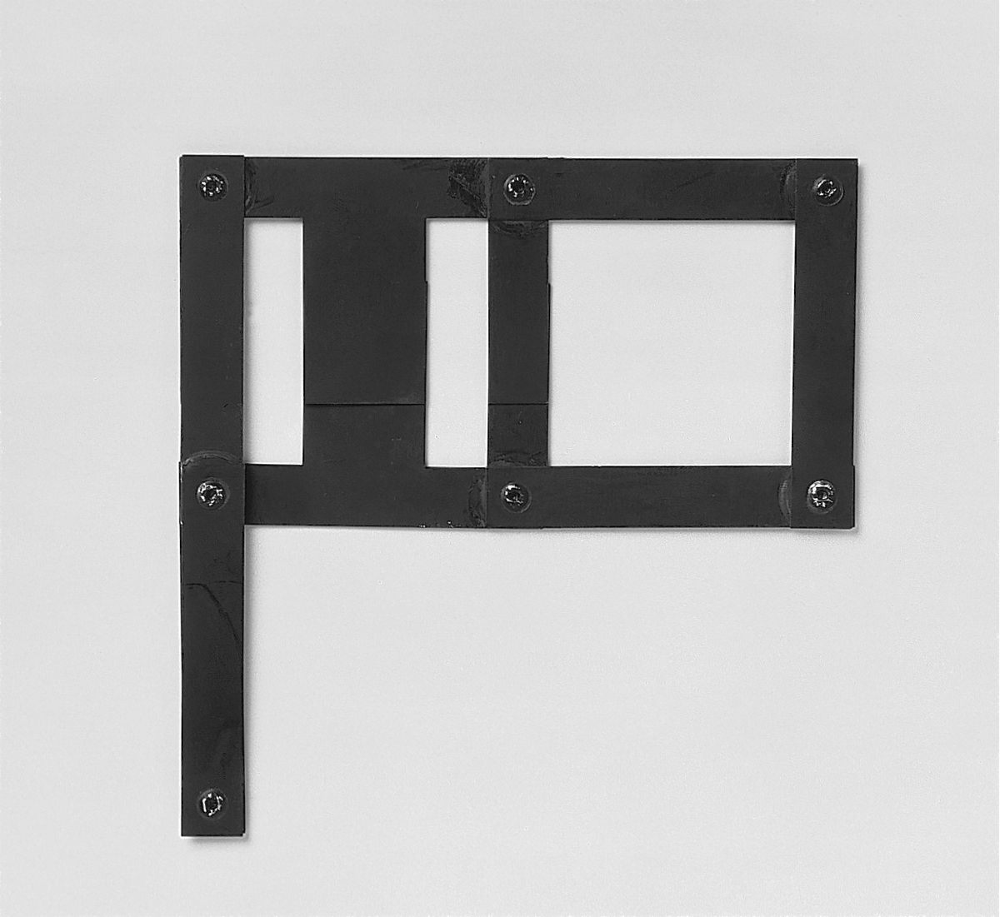

미니멀리즘이란 용어 자체는 1960년대부터 본격적으로 쓰였지만, 이러한 예술적 영감 자체는 더 전으로 거슬러 올라갈 수 있다. 동양 미술 특유의 '여백의 미' 역시 거시적 의미의 미니멀리즘이라 할 수 있다. 이는 물체가 깔끔하고 질서 있게 정돈된 것에서 느끼는 인간 본연의 편안한 감정과 밀접한 관련이 있다. 미니멀리스트들은 복잡한 겉치장이나 불필요한 부속에 불과한 표현들을 작품에서 완전히 제거하고, 사물의 본질적인 내용만을 드러내는 것을 추구한다.
